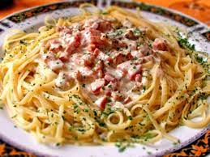

pasta carbonara
Receta de pan con jamón serrano. (La presentación es lo que cuenta)

Ingredientes
- 1 litro de agua
- 250 gramos de pasta
- 100 gramos de tocino
- 2 huevos
- 1 cucharada de mantequilla
- 150 gramos de queso parmesano
- aceite de oliva
- sal, cantidad necesaria
- pimienta, cantidad necesaria
Elaboración (Pasos)
- Calentar en una olla ¾ de llena el agua
-
Cortar el tocino en cuadros y ponerlo en un sartén con aceite de oliva,
sal y pimienta
- Batir los huevos y sazonar con sal y pimienta
- Cuando hierva el agua, poner la pasta en la olla
- Colar la pasta
-
oner la pasta en la olla y agregar el tocino, el huevo, mantequilla y el
queso parmesano
- Revolver bien y servir caliente